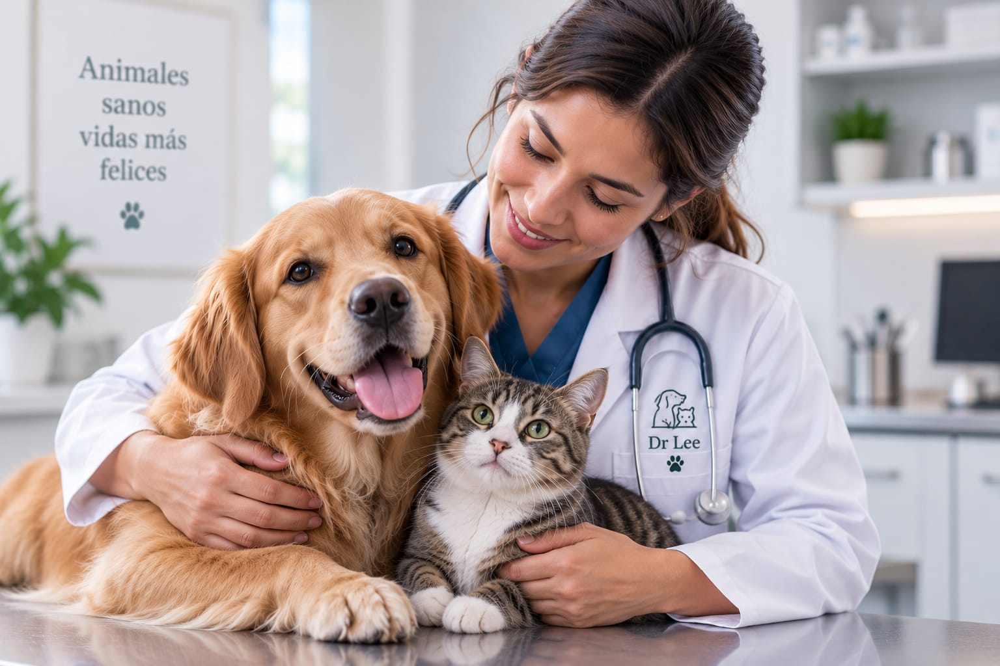

Su bienestar es
nuestra prioridad
En Veterinaria Dr Lee brindamos atención veterinaria profesional, cercana y preventiva para perros, gatos y otras mascotas.
🩺 Atención profesional
♥ Trato cercano y respetuoso
🌿 Prevención para una vida más larga

Un solo lugar, siempre para ellos
Atención. Prevención. Bienestar.
Servicios veterinarios confiables, en Esparza, Puntarenas.
Es momento de cuidar su bienestar
Solicitá una cita con Veterinaria Dr Lee.